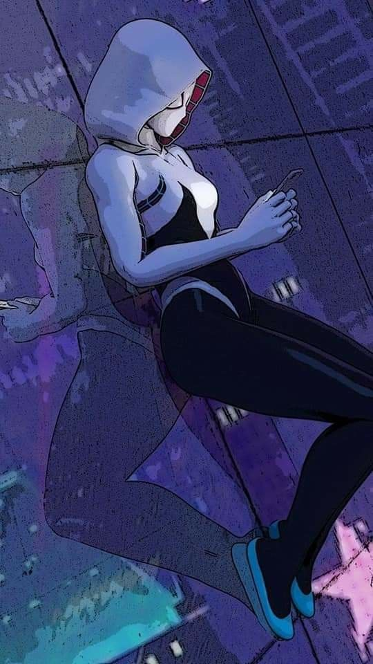
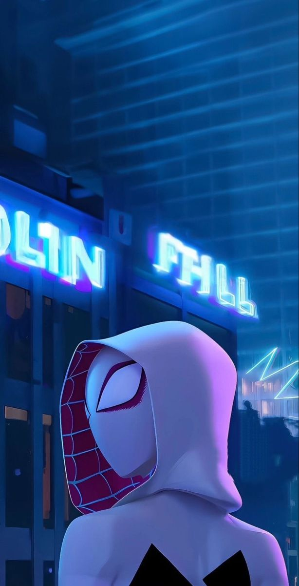
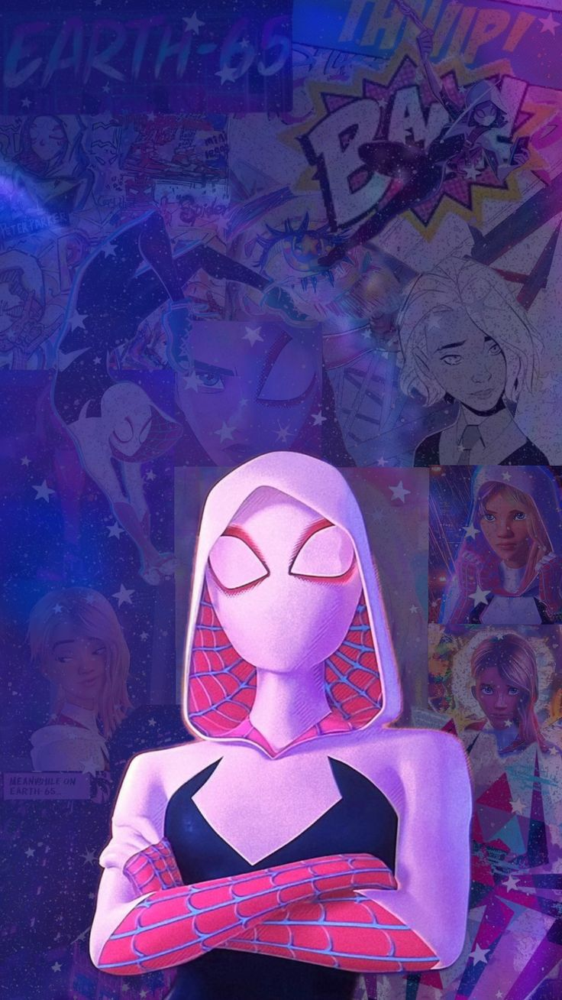
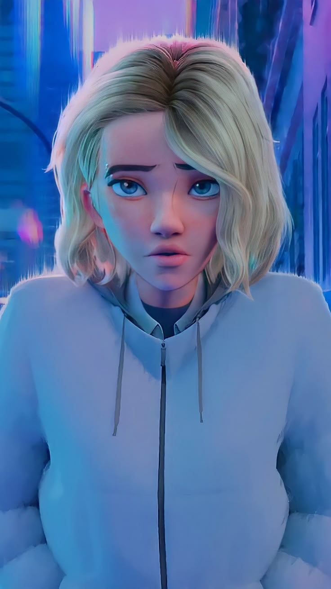
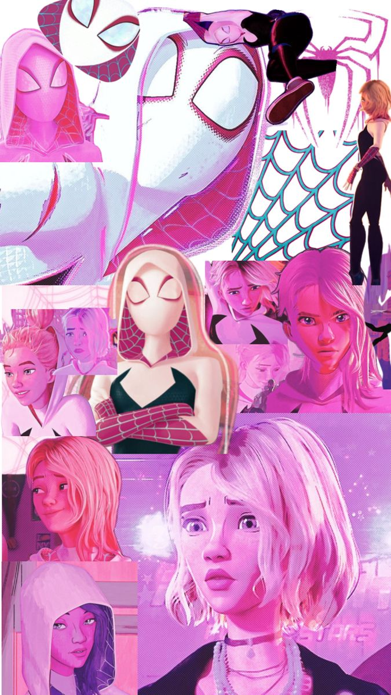
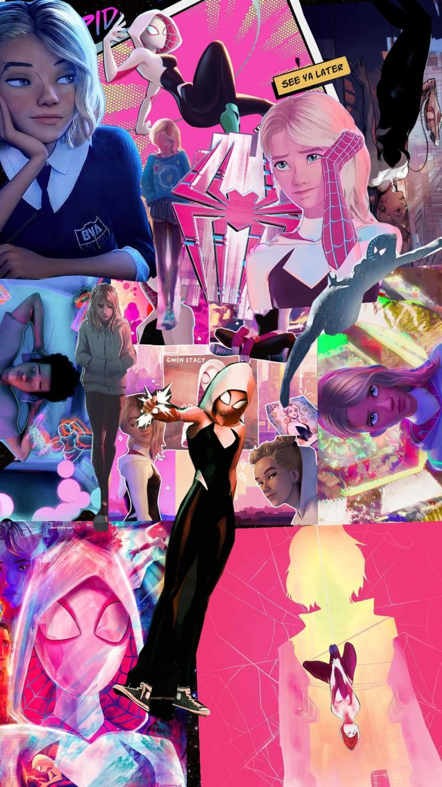

Son histoire
Gwen Stacy, dans son monde, a perdu Peter Parker. Elle porte le masque non par gloire, mais pour que personne d'autre ne ressente ce vide. Une héroïne qui danse entre l’ombre et la lumière.


Chargement...
Gwen Stacy, dans son monde, a perdu Peter Parker. Elle porte le masque non par gloire, mais pour que personne d'autre ne ressente ce vide. Une héroïne qui danse entre l’ombre et la lumière.
Gwen, c’est le cri silencieux de ceux qui n’abandonnent pas. Sa solitude, sa force, sa loyauté — tout en elle me touche. Elle me rappelle qu’on peut être brisé.e et quand même sauver le monde.
J’ai toujours ressenti chez Gwen une force intérieure immense, mais aussi une douleur contenue. Quand elle regarde Miles, il y a à la fois de l’admiration, de la tendresse… et une peur sourde. La peur de le perdre, comme Peter. La peur de mal faire. Et pourtant… elle choisit toujours de le protéger, quitte à s’éloigner.
Gwen n’a jamais voulu trahir Miles. Elle l’a protégé dans l’ombre, dans le silence, dans l’absence. Ce qu’elle a fait en refusant de lui dire toute la vérité, c’était injuste, mais guidé par l’amour. Il est la seule anomalie… mais surtout, la seule constante dans son cœur.
Maîtrise du lancer de toiles, avec une grâce acrobatique qui ferait rougir même Peter.
Agilité surnaturelle : Gwen danse littéralement entre les buildings, rapide et fluide comme une vague.
Sens artistique développé : batteuse dans un groupe de rock, Gwen associe force et sensibilité.
Réflexes et intelligence aiguisés, capable d’anticiper les mouvements ennemis avec finesse.
Force proportionnelle à une araignée, capable de neutraliser plusieurs adversaires d’un coup.





Tu es un fan de Gwen ? Tu veux discuter avec d'autres passionnés ? Ce coin est pour toi.